Repaso de la multiplicación
En este capítulo vamos a recordar la multiplicación.

¿Qué es la multiplicación y para qué nos sirve?
Recuerda que la multiplicación es una operación cercana a la suma, podríamos decir que son hermanas, ya que se complementan y comparten muchas de sus propiedades, aunque no todas.
Cuando estás multiplicando, estas realizando sumas de una forma más rápida y resumida.
Observa:
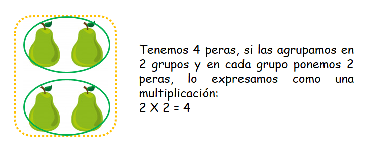Las tablas de multiplicar nos indican los resultados entre la multiplicación de un número de grupos por un un número de elementos.
Si observas bien notarás que al multiplicar con la tabla del 2 lo que estás haciendo es realizando grupos en los cuales vas agrupando de a 2 elementos, es por esto que la tabla del 2 la puedes aprender memorizando el conteo de 2 en 2 (2, 4, 6, 8, 10, 12, 14, 16, 18, 20).
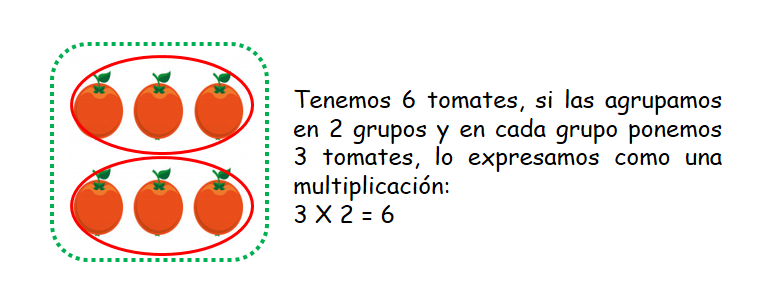Al multiplicar con la tabla del 3 lo que estás haciendo es realizando grupos en los cuales vas agrupando de a 3 elementos por cada grupo, es por esto que la tabla del 3 la puedes aprender memorizando el conteo de 3 en 3 (3, 6, 9, 12, 15, 18, 21, 24, 27, 30).
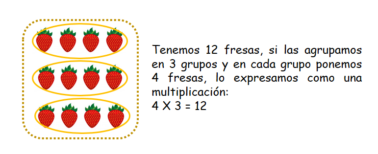Al multiplicar con la tabla del 4 lo que estás haciendo es realizando grupos en los cuales vas agrupando de a 4 elementos por cada grupo, es por esto que la tabla del 4 la puedes aprender memorizando el conteo de 4 en 4 (4, 8, 12, 16, 20, 24, 28, 32, 36, 40).
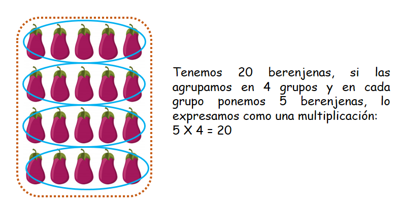Al multiplicar con la tabla del 5 lo que estás haciendo es realizando grupos en los cuales vas agrupando de a 5 elementos por cada grupo, es por esto que la tabla del 5 la puedes aprender memorizando el conteo de 5 en 5 (5, 10, 15, 20, 25, 30, 35, 40, 45, 50).
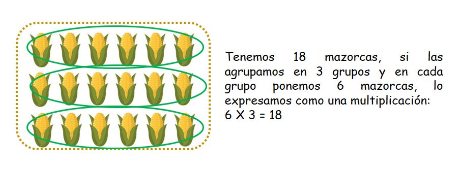Al multiplicar con la tabla del 6 lo que estás haciendo es realizando grupos en los cuales vas agrupando de a 6 elementos por cada grupo, es por esto que la tabla del 6 la puedes aprender memorizando el conteo de 6 en 6 (6, 12, 18, 24, 30, 36, 42, 48, 54, 60).
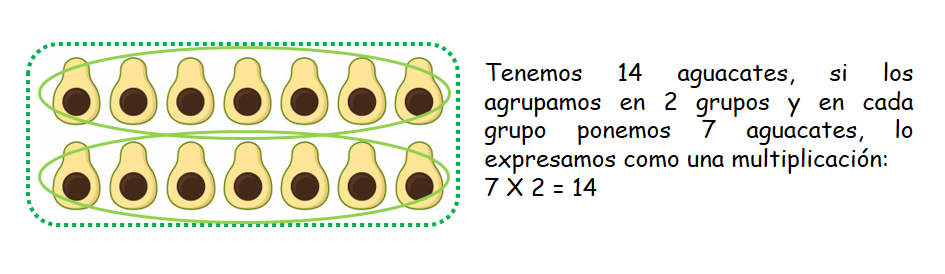Al multiplicar con la tabla del 7 lo que estás haciendo es realizando grupos en los cuales vas agrupando de a 7 elementos por cada grupo, es por esto que la tabla del 7 la puedes aprender memorizando el conteo de 7 en 7 (7, 14, 21, 28, 35, 42, 49, 56, 63, 70).
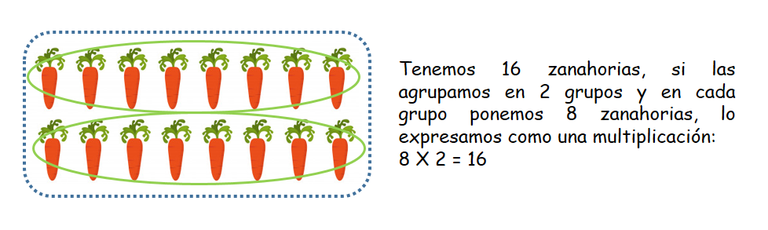Al multiplicar con la tabla del 8 lo que estás haciendo es realizando grupos en los cuales vas agrupando de a 8 elementos por cada grupo, es por esto que la tabla del 8 la puedes aprender memorizando el conteo de 8 en 8 (8, 16, 24, 32, 40, 48, 56, 64, 72, 80).
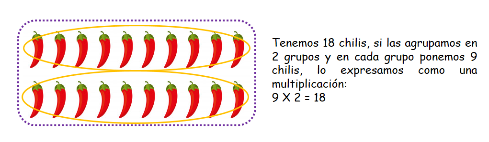Al multiplicar con la tabla del 9 lo que estás haciendo es realizando grupos en los cuales vas agrupando de a 9 elementos por cada grupo, es por esto que la tabla del 9 la puedes aprender memorizando el conteo de 9 en 9 (9, 18, 27, 36, 45, 54, 63, 72, 81, 90).
- ¿Qué vamos a aprender?
- Multiplicación por una cifra
- Multiplicación por dos cifras
- Multiplicación por tres cifras
Antes debes recordar:
Los términos de la multiplicación:
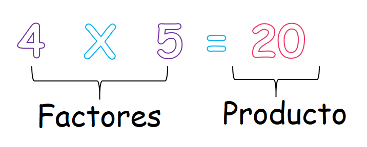(1)Multiplicación por una cifra:
Cuando multiplicamos por una cifra debemos tener en cuenta la tabla de multiplicar que nos pide la operación, es decir, sabernos muy bien la tabla para resolver bien la operación, además es importante que anotes en la casilla correcta el número que llevas, si tienes esa situación y que lo sumes al número correspondiente.
Pasos para multiplicar por 1 cifra:
A. Iniciamos por las unidades. El factor primer factor me multiplica al número que está en la casilla de las unidades. Si esta multiplicación me da un número de dos cifras, escribimos en el producto solo las unidades y anotamos las decenas en la casilla de las decenas.
Observa:
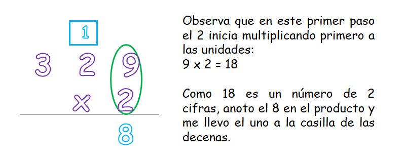B. Continuamos multiplicando ahora por las decenas y al resultado de esta multiplicación le sumamos el número que llevábamos.
Observa:
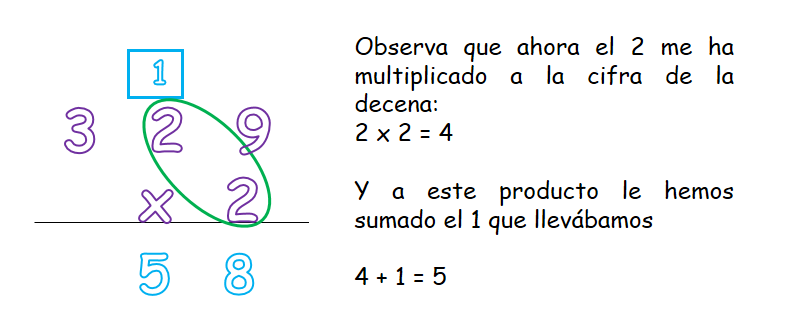C. Pasamos ahora a multiplicar por las centenas.
Observa:
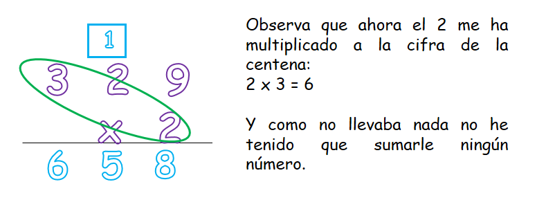(2)Multiplicación por dos cifras:
Para multiplicar por dos cifras debemos tener en cuenta varias cosas, entre ellas, las dos tablas de multiplicar que te pide la operación, ubicar el número que llevas, si es la situación, en la casilla correcta, dejar el espacio en las unidades cuando vas a multiplicar por la segunda cifra y sumar los totales.
Pasos para multiplicar por dos cifras:
A. Iniciamos multiplicando por la primera cifra a cada uno de los números que se encuentran en la parte superior, iniciando siempre por las unidades, después pasando a las decenas, luego a las centenas, etc.
Observa:
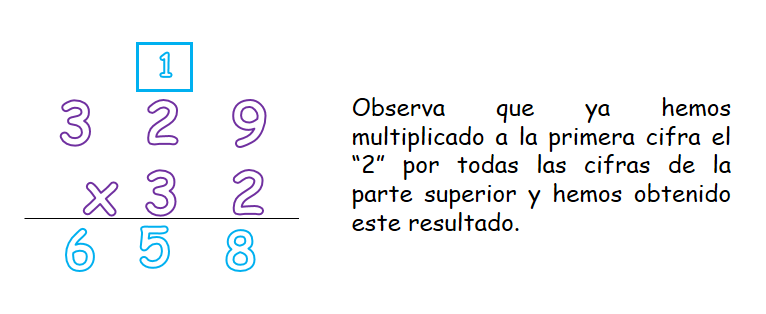B. Para pasar a multiplicar por la segunda cifra, primero debemos dibujar un cuadrito vacío debajo de las unidades ya que la cifra por la cual vamos a multiplicar pertenece a las decenas, una vez hecho esto, empezamos a multiplicar la segunda cifra por las unidades, después las decenas, y luego las centenas.
Observa:
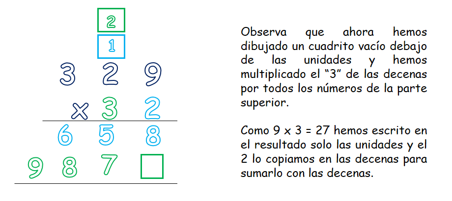C. Ahora que ya tenemos listas las multiplicaciones solo nos falta sumar los dos resultados que obtuvimos.
Observa:
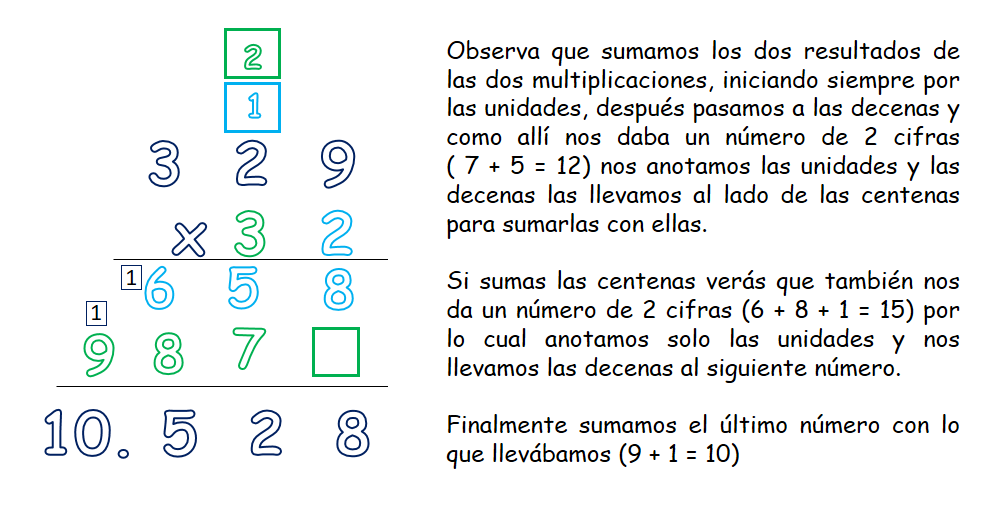(3)Multiplicación por tres cifras:
Para multiplicar por tres cifras debemos tener tener en cuenta varias cosas, entre ellas llevar el orden de los números que estamos multiplicando iniciando siempre por las unidades, después las decenas y después las centenas. Escribir en la casilla correspondiente los números que llevas al multiplicar y al sumar, y dibujar los dos cuadrito vacíos en las unidades primero y después en las decenas al multiplicar por la segunda y la tercera cifra.
“Tip: Escribe los números muy ordenados uno debajo del otro cada vez que cambias de cifra al multiplicar para que al final en la suma no tengas ningún problema.
Pasos para multiplicar por tres cifras:
A. Iniciamos multiplicando por la primera cifra a todos los números de la parte superior, como si estuvieras multiplicando por una sola cifra, seguimos el mismo procedimiento.
Observa:
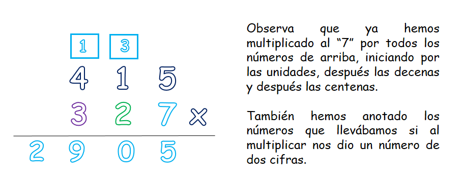B. Ahora vamos a pasar a multiplicar por la segunda cifra, recuerda que antes de hacerlo debemos dibujar un cuadrito debajo de las unidades, después de hecho esto podemos multiplicar la segunda cifra por los tres números de la parte superior.
Observa:
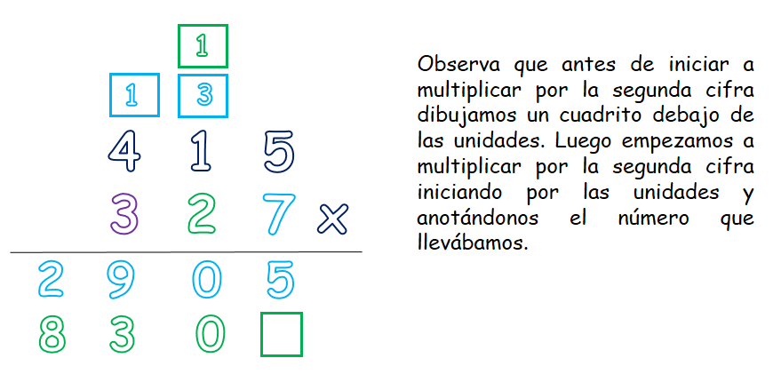C. Ahora vamos a pasar a multiplicar por la tercera cifra, antes de hacerlo debemos dibujar un cuadrito vacío debajo de las decenas, luego de hacer esto, ya podemos iniciar con la multiplicación por la tercera cifra.
Observa:
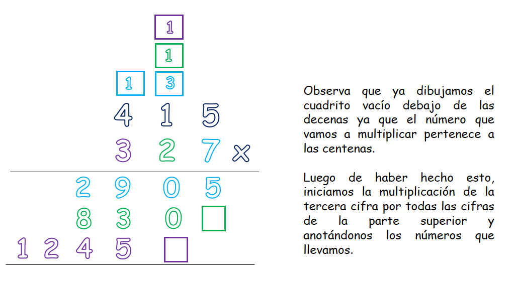D. Ya solo nos falta sumar los tres resultados, para finalizar la multiplicación.
Observa:
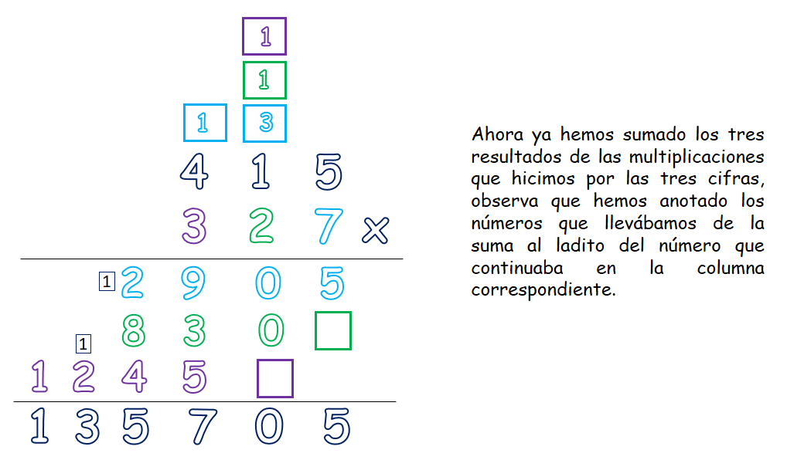Así de fácil es multiplicar por tres cifras, si prestas atención a los detalles será súper sencillo hacerlo, una vez has aprendido a multiplicar por una cifra podrás hacerlo por las cifras que quieras.
Material extra para trabajar el tema de la multiplicación:
En el siguiente enlace podrás encontrar diferentes recursos para aprenderse las tablas desde el 1 hasta el 10 creadas por educapeques.com.
Dando click en este enlace encontrarás fichas que puedes descargar para repasar las tablas de multiplicar creadas por Orientaciónandujar.es.
En este enlace podrás descargar un cuadernillo de trabajo sobre las tablas de multiplicar creado por Edufichas.com.
En este link podrás descargarte un cuadernillo de trabajo sobre multiplicaciones por 1, 2 y 3 cifras creado por Edufichas.com.
Vídeos orientativos:
En este vídeo “La multiplicación” de Aula 365- Los creadores encontrarás una explicación de lo que es la multiplicación.
En este vídeo “Aprendiendo a multiplicar. La multiplicación” de Happy learning encontrarás una explicación de la relación entre la suma y la multiplicación.
En este vídeo “¿Cómo multiplicar por dos cifras?” de Aula 365- Los creadores encontrarás una explicación del procedimiento para multiplicar por 2 cifras.